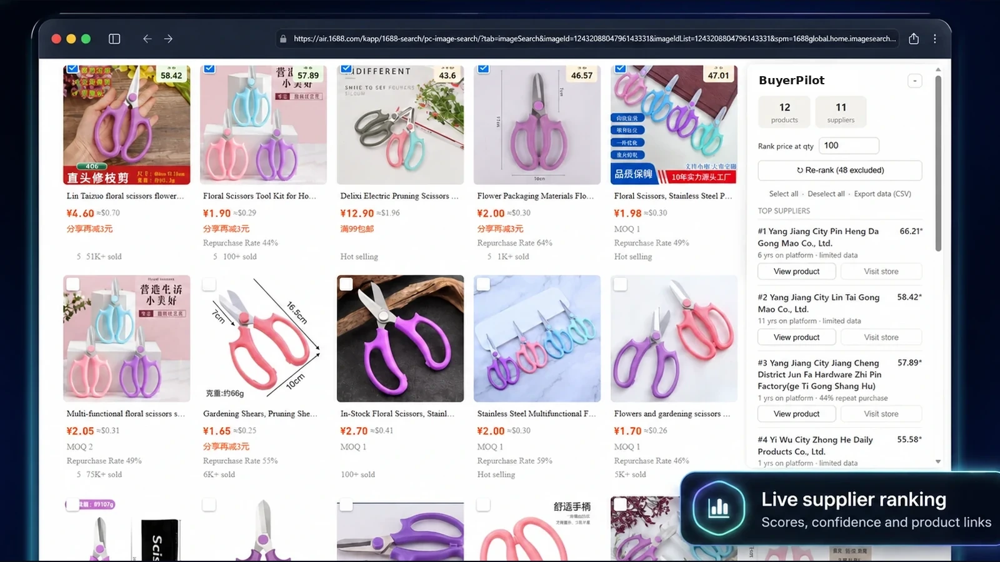

Live supplier rankings on Alibaba + 1688
BuyerPilot: Compare and rank Alibaba & 1688 suppliers with evidence, not tabs.
BuyerPilot selects, scans, automatically deduplicates and ranks suppliers using quantity-aware pricing, ratings, seller tenure, repeat-purchase signals, business information and marketplace verification—directly on the pages you already use.
- Standard ranking included in trial
- Automatic supplier deduplication
- Pro unlocks CSV + advanced profiles

12 selected products→11 unique suppliers→1 ranked shortlist
Actual marketplace workflow. The panel stays on the Alibaba or 1688 page and can be moved anywhere on screen.
Alibaba + 1688Separate data and ranking logic
Quantity-aware pricingCompare applicable product tiers
Score confidenceSee when supplier data is limited
Automatic deduplicationOne seller cannot occupy repeated ranks
Use BuyerPilot in your browser
Supported on Chrome, Microsoft Edge and Firefox
Install BuyerPilot from the official Chrome Web Store, Microsoft Edge Add-ons, or Mozilla Firefox Add-ons listings.